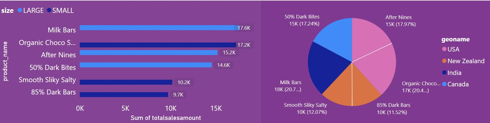
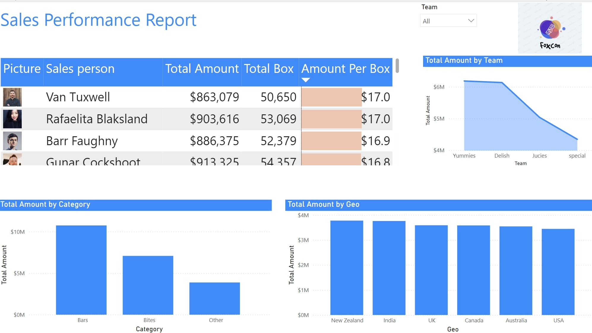

Clear requirementsBRDs, FRDs, user stories and acceptance criteria
BUSINESS ANALYST · 4+ YEARS · REQUIREMENTS · INTEGRATION · DATA & UAT
Business Analyst turning requirements into delivery-ready outcomes.
I translate stakeholder needs into BRD/FRD, user stories, API and data requirements, and UAT-ready acceptance criteria—then help technical teams deliver and validate the right outcome.
› focus:
BRD / FRD
User Stories & Acceptance
SQL & Power BI
API & UAT
Process & Figma Diagrams
Scope first·Evidence-led·Clear acceptance & handover
Hiring for a Business Analyst? Review my experience ↗
↗FROM PROBLEMTO PROGRESS
01Discovery
02Requirements
03Data & systems
04Validation
DELIVERY PRINCIPLEDefine before building
PROJECT OUTPUTUseful, testable artifacts
TOOLKIT · INTERACTIVE VIEW
The working stack, in orbit.
Core tools and delivery techniques used to turn requirements into testable outcomes. Drag the ring or focus it and use the arrow keys.
// 01 · DATASQLValidation, reconciliation and KPI queries
// 02 · ANALYSISPythonTransaction and SLA analysis
// 03 · REPORTINGPower BIDashboards, measures and reporting logic
// 04 · METRICSDAX & Power QueryData shaping and reusable measures
// 05 · REQUIREMENTSBRD / FRDScope, business rules and functional behavior
// 06 · BACKLOGUser StoriesAcceptance criteria and refinement
// 07 · DELIVERYJira & ConfluenceWork tracking, evidence and documentation
// 08 · INTEGRATIONAPI RequirementsField mappings, errors and system flows
// 09 · TESTINGRTM & UATTraceability, validation and sign-off
// 10 · DELIVERYAgile / ScrumPrioritisation, change and release support
INTERACTIVE 3D TOOLKITDrag to spin · ← / → to rotate · Motion preferences respected
Data-backed insightSQL, Python and Power BI analysis
System clarityAPI flows, field mapping and process diagrams
Structured validationTraceability, UAT scenarios and defect follow-up
Practical handoverDecisions, assumptions and clear next steps
SQLPythonPower BIDAXPower QueryAdvanced ExcelJiraConfluenceREST API requirementsBRD / FRDUser storiesBDD acceptance criteriaRTMUATFigma diagrams
SELECTED DELIVERY EVIDENCE
Numbers behind the delivery work.
Career evidence across analysis, requirements, integration and validation. Metrics are scoped to the work described in the resume.
WAYS I CAN HELP
Services built around your problem.
Start with a specific business need. We agree on scope, deliverables and acceptance expectations before work begins.
Requirements & process clarity
Turn fragmented requests into an agreed problem statement and an actionable backlog.
Explore service ↗Analysis and reporting
Define useful KPIs, investigate patterns and shape decision-focused reporting with SQL, Python and Power BI.
Explore service ↗Validate systems and delivery
Clarify API behavior, field mapping, failure scenarios, traceability and user acceptance expectations.
Explore service ↗Need a narrower scope or a combination of services? Describe the challenge ↗
FROM BUSINESS NEED TO TEST RESULT
One traceable path from problem to proof.
Explore the stages and the work products that keep business, engineering and QA aligned. This is an illustrative view of the fictional PayTrack sample.
Discover the business need
Understand the problem, users, current process, constraints and decision owners before selecting a solution.
Problem statementStakeholder mapAS-IS processAssumptions & RAID
Problem→Stakeholders→Current state
Discovery outputs should be confirmed with the relevant stakeholders before the scope is baselined.
SELECTED WORK
Case studies, not just screenshots.
Four portfolio projects across SQL analysis, Power BI, forecasting and data engineering. Each opens its repository.
01 / 04SQL / analysis
Sales Data Analysis
Used SQL to answer focused sales questions about product performance, leading salesperson by region, high-performing regions and high-value first-quarter transactions.
View repository ↗
Portfolio screenshot02 / 04HR analytics
HR Data Analysis
Power BI workforce analysis covering employee performance, turnover, tenure and HR trends, organized for review and data-informed decisions.
View repository ↗ Portfolio screenshot
Portfolio screenshot03 / 04Sales forecasting
Sales Forecasting Report
Uses reporting and analysis to review sales performance, monthly profit trends and shipment-efficiency measures relevant to planning.
View repository ↗
Portfolio screenshot04 / 04Pipelines / platform
MetaLayer
Data engineering workflow organized around orchestration and structured processing layers; review the repository README for architecture, validation and setup details.
View repository ↗ Illustrative architecture
Illustrative architectureBrowse all 9 projects ↗
Transparency note: portfolio projects and repositories, not claims of paid client engagements.
DOCUMENTATION EXAMPLES
See how I turn requirements into delivery-ready artifacts.
Explore a connected fictional payment-reconciliation case study—from business requirements through traceability, UAT, workshop actions, diagrams and editable wireframes.
Fictional portfolio case study. PayTrack, names, amounts, references and scenarios are illustrative. These examples are not client deliverables or executed test evidence.
BRD & FRD
Business objectives, scope, functional behavior, rules and open decisions.
View BRD source ↗View FRD source ↗User stories & acceptance
Role-based stories with Given/When/Then criteria and negative scenarios.
View sample ↗RTM, test cases & UAT
Traceability, test design, expected results and sign-off template.
View sample ↗Workshop MoM & RAID
Discovery summary, decisions, actions, risks, assumptions and dependencies.
View sample ↗Process & data diagrams
Reconciliation flow, conceptual architecture, API sequence and logical ERD.
Explore diagrams ↗Figma UI wireframes
Editable dashboard and exception-detail screens with illustrative values.
Open wireframes ↗WHAT THE TEAM GETS
A practical BA handoff, not just a document.
The output connects stakeholder intent to build-ready detail, validation and a handover the team can act on.
Agreed scope
Problem statement, stakeholders, assumptions, constraints, exclusions and decision owners.
Build-ready detail
BRD/FRD, business rules, user stories, acceptance criteria and process/API/data flows.
Validation path
Requirement traceability, UAT scenarios, expected outcomes and defect follow-up.
Clear handover
Open questions, RAID/actions, accepted changes, limitations and next steps.
LET’S START WITH THE PROBLEM
Discuss the outcome you need to reach.
Share a short brief. We can clarify context, scope and the deliverables that would help before deciding the next step.
Start a project enquiry ↗ Connect on LinkedIn ↗